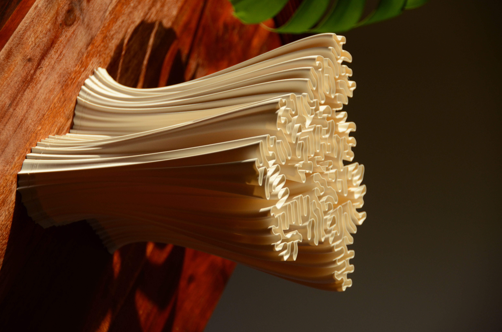

Collaboration with
Michael Jasinski
2023-present, Amsterdam/Hamburg

A system for generating unique nature-inspired lamp shades was conceived by Michael Jasinski. Together with him, I co-developed a design framework for exploring new lamp designs, optimising current ones and procedurally adapting details for assembly and electric component integration.

Several lamp variants are currently sold on online marketplaces such as Catawiki and Adorno, and an online tool for bespoke design generation is in development.
More information can be found here.
Photos by Michael Jasinski.